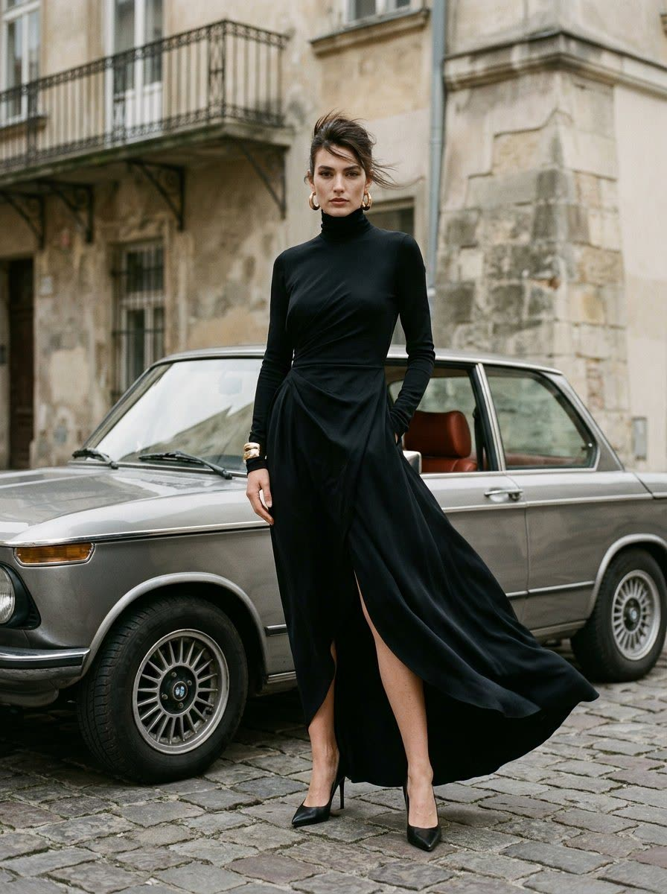

Editorial model with vintage BMW
WRD-020WardrobeNano Banana 2by dreamy digital arts (@dreamydigiarts)2026-10-10

Tall model in long black look posed in front of a vintage BMW on a European street.
Prompt
High-fashion editorial photography, a tall model standing confidently in front of a vintage BMW car with neutral tones. The model wears a flowing, asymmetrical black dress with a high-neck turtleneck, elegant and modern, paired with black pointed heels. Subtle windswept effect on the fabric, soft natural light, muted and slightly desaturated tones, sophisticated and avant-garde aesthetic. The car features retro-style rims, and its interior has a reddish-brown tone visible.
Tags: editorial, vintage car, all black